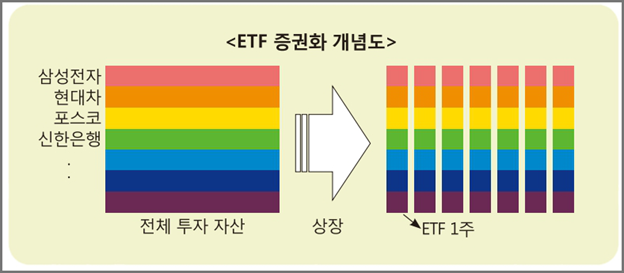

상장지수 펀드(ETF)
주식시장에서 거래가 가능한, 거래 목적의 투자신탁(펀드) 상품이다. 특정 주가 지수에 따라 수익률이 결정되는 인덱스 펀드를 증권 시장에 상장한 펀드다. ETF는 주식, 원자재, 채권 등 자산으로 구성되며, 거래되면서 순자산가치로 수렴한다. 대부분의 ETF는 S&P 500 또는 MSCI EAFE와 같이 인덱스를 따라간다. 거래비용이 낮고, 세금이 적으며 주식과 비슷한 특징이 있어서 투자자산으로서 매력적이다. ETF는 상장지수 상품 중 가장 인기있는 유형이다.
ETF 구조
ETF 소개 영상